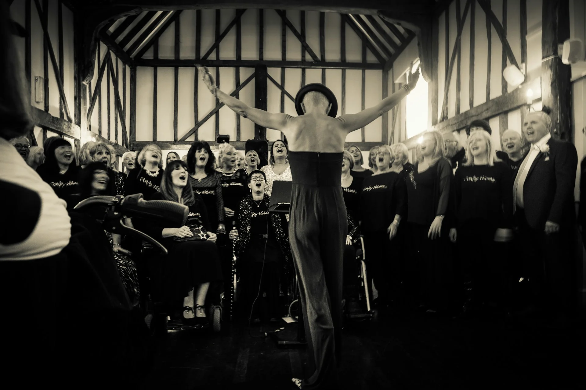
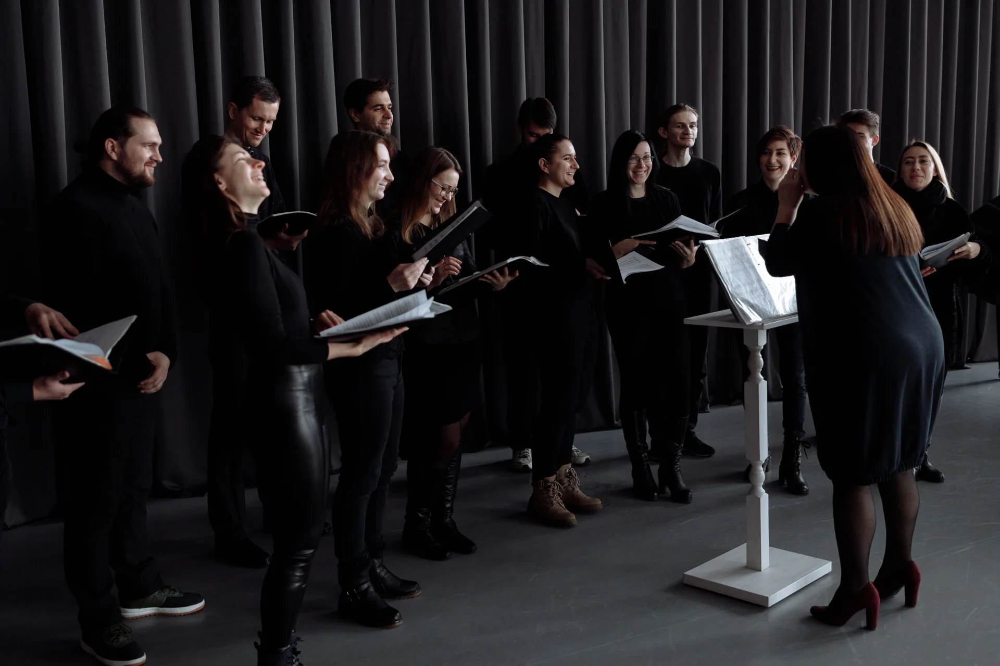
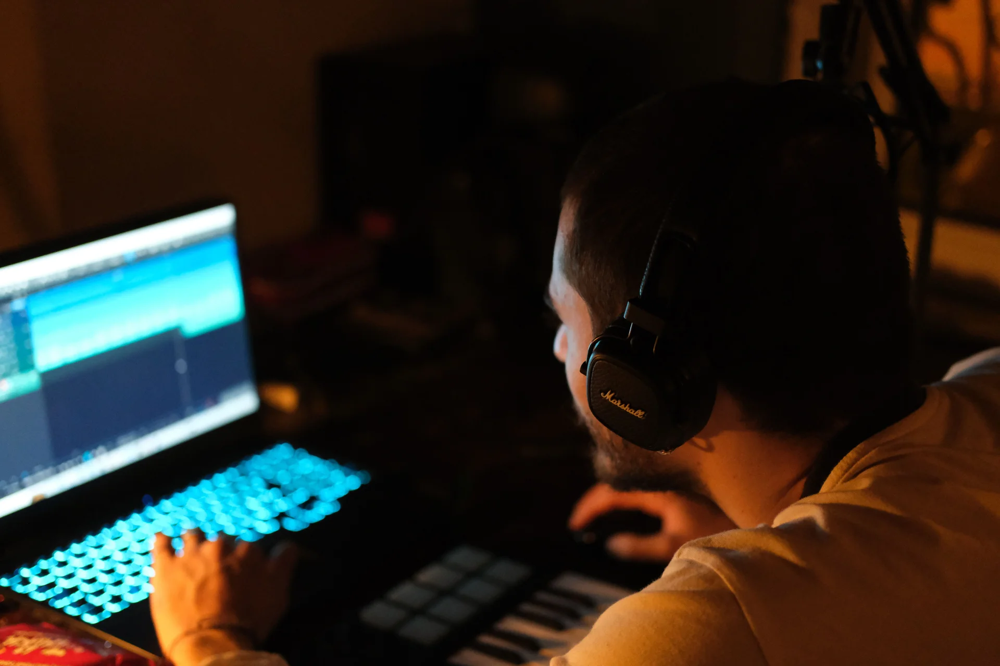

Nov 2026 · Mérida
Selección de Música — Prepa 1
La Selección de Música de la Prepa 1 en escena. Voces e instrumentos que se encuentran, imperfectas y valientes.
EnsambleSobre mí
Dirijo ensambles corales e instrumentales, trabajo en la Universidad Anáhuac Mayab, y paso una cantidad sospechosa de tiempo explorando cómo la inteligencia artificial puede hacer que aprendamos, creemos y nos conectemos de formas que antes no eran posibles.
Para algunos suena contradictorio: ¿un director de coro metido en el mundo tech? Para mí es la misma pregunta con otro instrumento: ¿cómo ayudamos a las personas a encontrar su voz?
Creo que la música y la tecnología existen para acercar a las personas. Y que acompañar es más valioso que instruir.
— Memo

Música · El ensamble como laboratorio humano
El concierto dura una hora. Los ensayos duran un semestre. Aquí viven las voces que se están formando y los encuentros que las reúnen.

Nov 2026 · Mérida
La Selección de Música de la Prepa 1 en escena. Voces e instrumentos que se encuentran, imperfectas y valientes.
Ensamble10 Dic 2026 · Mérida
El concierto que marca el primer gran hito del año. Donde las voces que empezaron con los patitos terminan sonando como un ensamble.
ConciertoFeb 2027 · Por confirmar
Los que se fueron a la universidad regresan. Porque un ensamble no termina — se expande.
ReencuentroUna tarde sobre técnica coral, comunidad y el arte de encontrar la propia voz.
TallerTecnología · IA con alma
No uso IA para reemplazar lo que hacemos — la uso para amplificar lo que somos. La herramienta cambia; la pregunta permanece: ¿cómo ayudamos a las personas a crecer?

Idea
¿Te da miedo que un piano reemplace a un pianista? La IA funciona igual.
Leer másExperimento
Analizando una pieza cubana de Electo Silva con herramientas de IA. La herramienta al servicio del arte.
Leer másReflexión
La IA te da un pulso constante. Pero no sabe cuándo el rubato es más expresivo que la precisión. Eso es tuyo.
Leer másNotas de ensayo
Querido ser humano curioso: aquí escribo desde la frontera donde la música se encuentra con la innovación.
Liderazgo
Un director de ensamble que no escucha es un director que dirige al vacío. ¿Cuántas reuniones empiezan con alguien hablando y terminan con todos asintiendo?
Septiembre 2026
Tecnología
¿Te da miedo que la IA reemplace a los maestros? Mi respuesta siempre es la misma: ¿te da miedo que un piano reemplace a un pianista?
Septiembre 2026
Proceso
Empezamos con disciplina. Después vienen los patitos: una breve tortura colectiva. Y luego la invocación a la Llama — la Diosa de la clase que creó nuestro espacio musical.
Septiembre 2026
Contacto